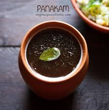

🍹 Panakam Recipe

Ingredients
- 1 cup jaggery (grated or powdered)
- 4 cups water
- 1 tsp roasted cumin powder
- 1/2 tsp black pepper powder
- 1 tbsp lemon juice
- Few mint leaves (optional)
- 1/4 tsp cardamom powder
Instructions
- Dissolve jaggery in warm water and stir well.
- Add roasted cumin powder, black pepper powder, and cardamom powder.
- Mix in lemon juice and mint leaves.
- Chill in the refrigerator or add ice cubes before serving.
- Serve cold as a refreshing traditional drink.
Serve With
- During festivals like Ram Navami
- As a refreshing summer drink
- With light snacks or sweets
🍋 Tip: Adjust jaggery and lemon juice according to your taste preference.